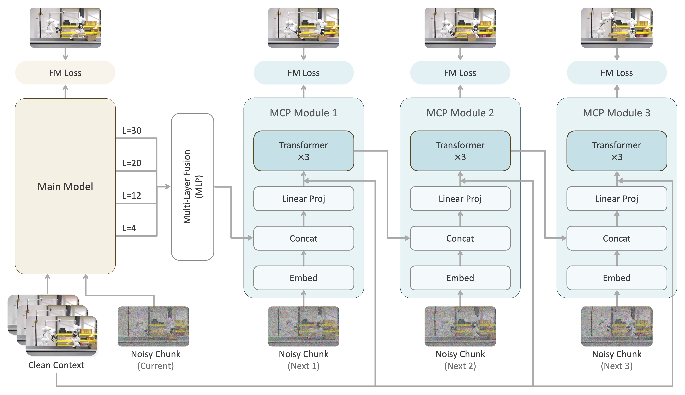

Real-world deployment results. Fruit Sorting, where the robot places an orange, an apple and a pear into a basket.
RoboTwin Benchmark Results
We introduce Next Forcing, a multi-chunk prediction framework for causal world modeling. It tackles the myopic supervision problem in autoregressive video world models, where next-chunk denoising often learns local appearance shortcuts instead of long-range dynamics, especially at high frame rates. By supervising future video chunks through chained MCP modules, Next Forcing improves training convergence and enables parallel chunk prediction at inference, reducing sequential generation cost and accelerating rollout.
How It Works
Next Forcing extends causal world modeling from one-step prediction to multi-chunk prediction: chained MCP modules expose the backbone to multiple future chunks during training while keeping generation causal.
Multi-chunk prediction
The main model denoises the current chunk, while chained MCP modules predict future chunks (next1, next2, ...) using features from the main model, providing dense temporal supervision during training and enabling parallel chunk prediction at inference.

Training and Inference Acceleration
Next Forcing accelerates both training convergence and inference rollout on RoboTwin.
PhyWorld Benchmark
On physical reasoning videos, Next Forcing produces more consistent dynamics than LingBot-VA under the same causal setup.
General Video Comparison
We evaluate pure video generation after removing the action stream. Next Forcing consistently achieves lower FVD than LingBot-VA throughout training, and the qualitative comparisons below show stronger temporal consistency.
Citation
@article{nextforcing,
title={Next Forcing: Causal World Modeling with Multi-Chunk Prediction},
author={Gangwei Xu and Qihang Zhang and Jiaming Zhou and Xing Zhu and Yujun Shen and Xin Yang and Yinghao Xu},
journal={arXiv preprint arXiv:2606.11187},
year={2026}
}